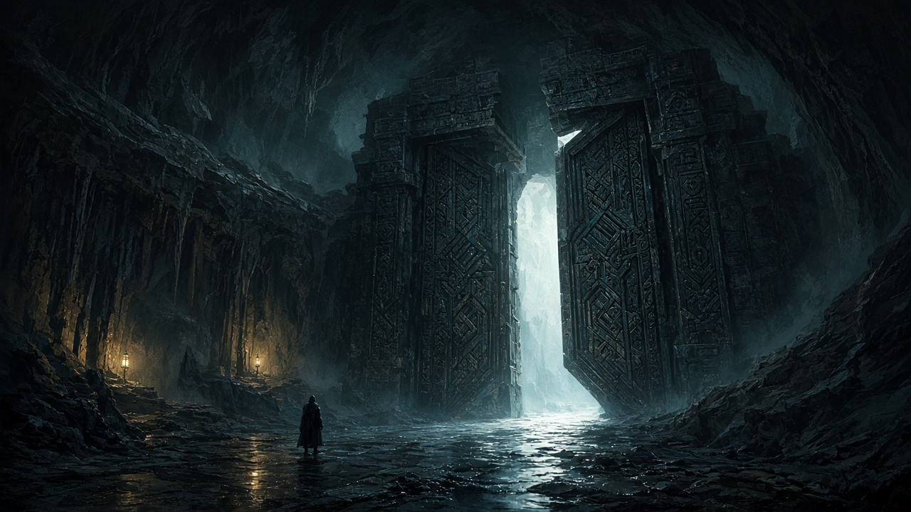

Three doors. One reads differently from each side. One stays open only while the light holds. One is worked by gravity, and the storyteller never touches the water. Everything you do is written down. The world remembers.

← the beacon wing · the corpus · the cartographer's desk · the arcade